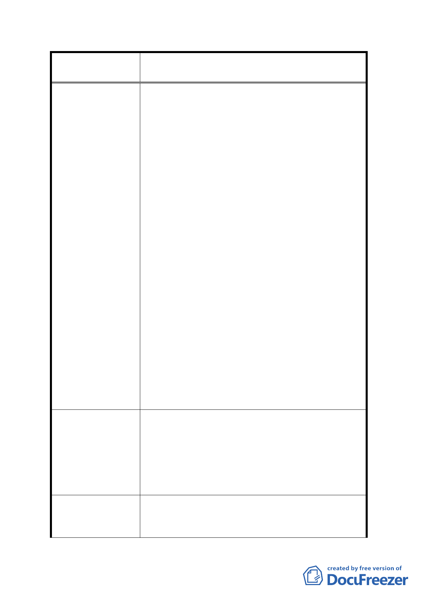

案名
變更臺北市內湖區蘆洲里附近部分工業區為
保護區、住宅區及道路用地主要計畫案
坪之房屋價值約計 3850 萬元(100*35 萬)。
分析:
1. 同樣土地面積，因土地重劃之使用分區不同，因
而造成了科工 A 區與住宅區有 2156 萬元之價
差，無形中造成住宅區所有權人莫大損失。故分
配不均之情形下，建議取兩者之平衡，將住宅區
容積率放寬至 300。換算所得可分回 165 坪土地
(100*55%*3.00)以每坪 35 萬元計算，則房屋價
值約 5775 萬元(165*35 萬)，雖與科工 A 區尚有
差距，但此時工業區房屋與住宅區房屋之價格相
差不遠，以價值面來說較為合理。
2. 本人持有土地公告現值約為 63000 元/平方公
尺，但鄰近部分土地之公告現值約為 34000 元/
平方公尺，本人繳納之地價稅也會高於周遭部分
土地，目前由規劃科得知重劃完成後平均發還土
地約 55%，本人認為此做法不具公平性，應該依
公告現值高低於做為發還土地比率的依據較為
恰當。
3. 本人民國 71 年持有土地，據本人了解重劃開發
案都為農地重劃，而農地使用期間是無需繳交地
價稅，但本人持有之土地現況為工二使用，至今
繳地價稅逾 27 年，本人請求應該依農地重劃方
式歸還全部或部分地價稅較為公平。
本人世居內湖，持有土地達 27 年，眼看著內湖各處
蓬勃發展，心中滋味實不知如何形容。蘆洲里對台
建 議 辦 法 北的貢獻完全是無怨無尤的，里內除垃圾場外，尚
有焚化爐及動物之家，且位處邊陲地帶，道路交通
等民生設施皆與臺北市區落後良多。請貴單位能完
全體恤身為土地持有人對土地的冀望，謝謝。
有關建議提高住宅區容積率 1 節，因屬細部計畫內
發 展 局 回 應 意 見 容，本局將納供參考，另有關所陳退回所繳地價稅因
非屬都市計畫範疇，建議洽稅捐單位詢問。
- 17 -